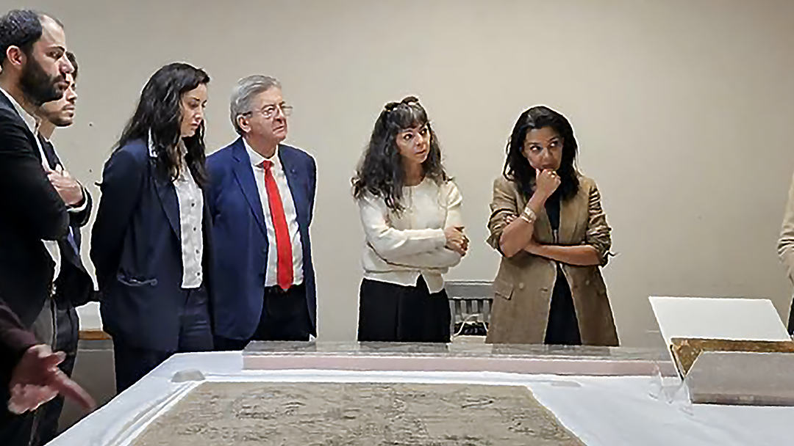
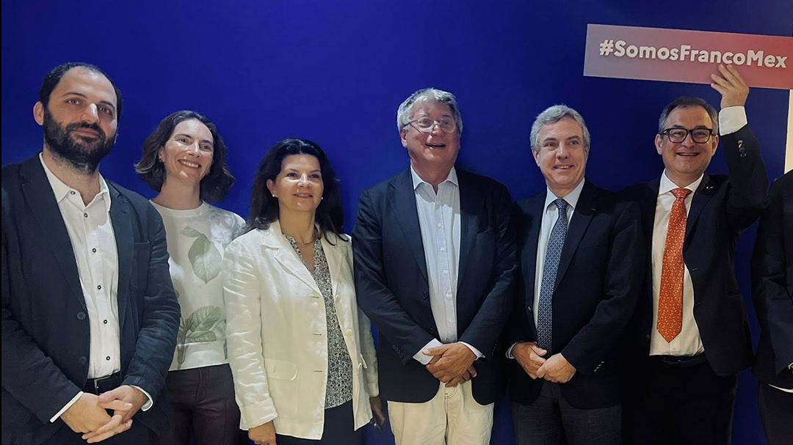

Nuestro programa
Los ejes mayores de nuestra lista de Izquierda Popular son el Humanismo en todos sus aspectos políticos, sociales, ecológicos y la preocupación de seguir con las luchas feministas. Defendemos un modelo político solidario, de justicia social y de inversión en los servicios públicos, en el cual todas y todos los franceses se sientan tomados en cuenta.
1. Ser la voz de todas y todos los franceses de México
Gran parte de las y los franceses en México se sienten a veces aislados por vivir tan lejos de la capital, por el idioma o sencillamente por escoger vivir como quieren. Nosotros representamos sin distinción alguna, a todas y todos los franceses de México, nacionales o binacionales, de Norte a Sur, de Este a Oeste del territorio, para defender la igualdad de sus derechos.

En contacto con los habitantes de San Rafael, Jicaltepec
2. Luchar contra la desvinculación del Estado
Frente a constantes restricciones en los presupuestos dedicados a los servicios consulares, a las becas escolares, a las escuelas en el extranjero, al sistema de cobertura de salud, a la cultura también, nuestra lista defenderá antes de todo la calidad de los servicios para los y las francesas y la herencia siempre viva de la presencia francesa en México. Nos preocuparemos por ser siempre un lazo con el Congreso y el Senado de Francia, con la Asamblea de los Franceses del Extranjero en todos los temas o problemáticas relativos a la vida de las y los franceses en el extranjero.

Con Jean-Luc Mélenchon y Sophia Chikirou, presidenta del grupo de amistad Francia-México
3. Defender un mejor acceso a la Educación y a la Seguridad Social
Abogaremos por la inclusión y la enseñanza mixta republicana en las escuelas y liceos franceses (mejores condiciones del empleo de las y de los profesores, fortalecimiento del CNED - Centro Nacional de Enseñanza a Distancia- ) así como por un mejor acceso a la Seguridad Social para los Franceses del extranjero (integración de la Caisse des Français de l’Étranger - Caja de los Franceses del extranjero - en el sistema de la Seguridad Social, ampliación del acceso a la Protección Medical Universal, cancelación del periodo de carencia de los cuidados de salud para quienes se mudan a Francia).

Somos Franco-Mexicanos
4. Apoyar la Cultura, las Empresas, la Ecología
Los proyectos profesionales y culturales le dan mucha presencia a Francia en el mundo y México es un lugar privilegiado de mucho enriquecimiento gracias a las relaciones existentes entre los dos países y los dos pueblos. Nos esforzaremos en dar a conocer a todas y todos nuestros compatriotas los programas proporcionados por Francia, en ayudar a los y las promotores culturales en sus trámites de búsqueda de subvenciones para apoyar proyectos de creación artística. Daremos prioridad a los proyectos con responsabilidad social y ambiental.
5. Votar por senadores de izquierda
Durante su mandato, las Consejeras y los Consejeros de los franceses del extranjero participarán en dos elecciones senatoriales. En esas dos elecciones, escogerán una candidatura que respete los compromisos sociales, económicos, ecológicos de una izquierda que defienda la paz, la fraternidad, y el derecho a la binacionalidad.